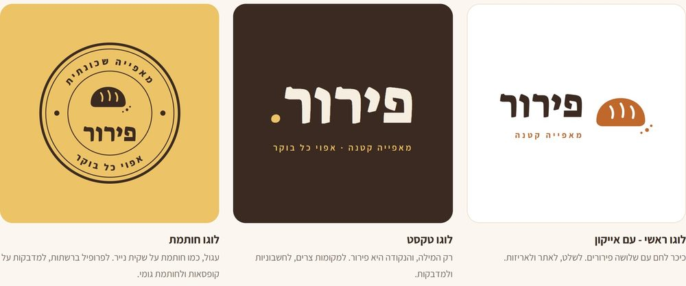
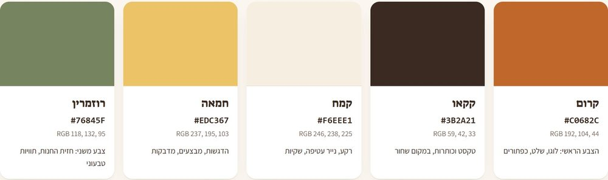
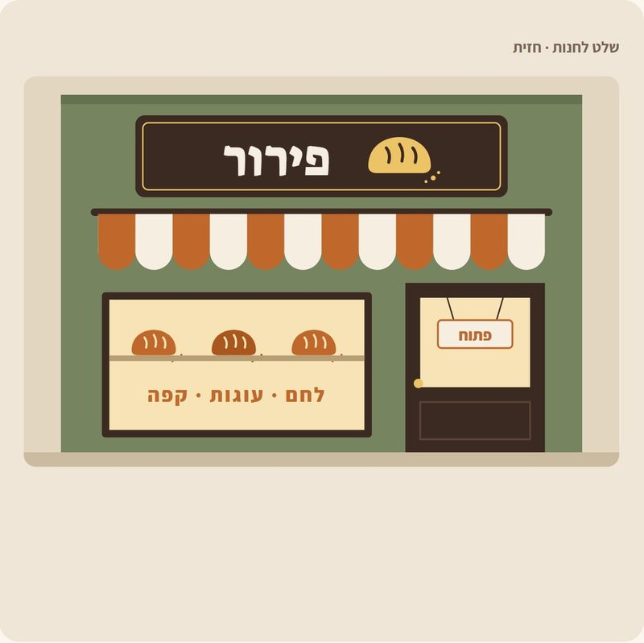
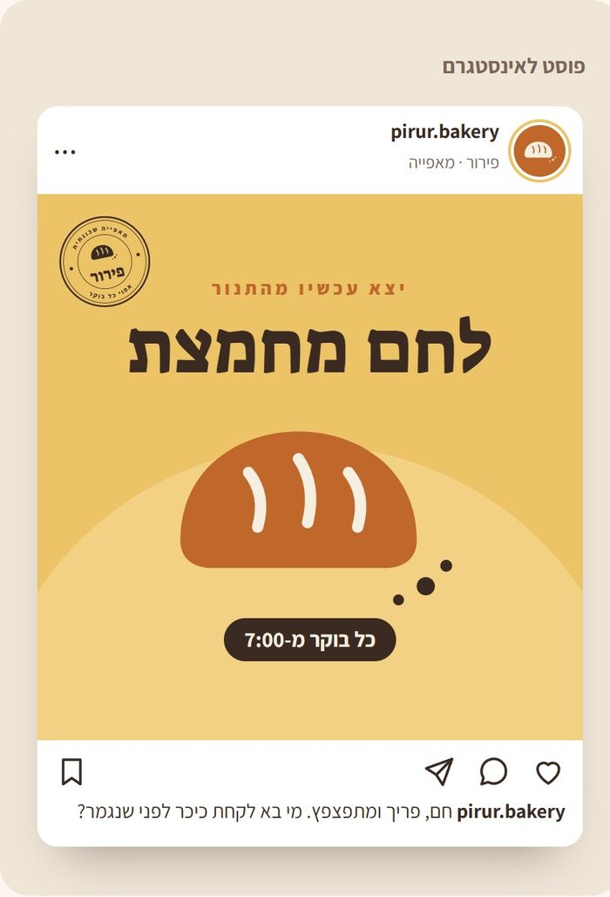

לוגו לעסק?
Claude מעצב ערכה שלמה
לוגו, צבעים, כרטיס ביקור ושלט. לעסק שרק מתחיל, זה בדרך כלל מעצב או אתר בתשלום. Claude עושה את זה מבקשה אחת, ואפשר לשנות כל דבר במילים.
התוצאה האמיתית
ביקשנו ערכת מיתוג למאפייה שהמצאנו, ״פירור״ (הבקשה למטה, להעתקה). זה מה ש-Claude החזיר, כמו שהוא, בסיבוב אחד. בנינו ב-Claude (Opus 5.5, ב-Claude Code), 9.11.2026. בצ'אט הרגיל התוצאה יכולה לצאת קצת שונה.




״פירור״ היא דוגמה. הכתובת והטלפון בהדמיות הם מילוי של Claude.
כמה זה עולה
לפי Looka, אתר לעיצוב לוגואים, ערכת מיתוג עולה 96$ לשנה, ולוגו ב-4 סוגי קבצים 72$ (לעצב שם אפשר בחינם, משלמים על הקבצים). לפי Anthropic, הכלי של Claude שבונה את זה (Artifacts) פתוח בכל התוכניות, גם בחינמית. ב-Looka יש הרבה יותר תבניות, ברור. לעסק שרק מתחיל, מספיק לבקש.
מה צריך
חשבון ב-Claude. ההגדרה Create and edit files דלוקה (בהגדרות הישנות היא נקראת Code execution and file creation). איפה: Settings (הגדרות) ← Capabilities (יכולות).
איך עושים
- מדליקים את ההגדרה למעלה.
- פותחים שיחה חדשה ומדביקים את הבקשה שלמטה. מחליפים את המאפייה בעסק שלכם: שם, מה הוא מוכר, ואיזו אווירה (כפרי, מודרני, שובב).
- Claude בונה, והערכה נפתחת בחלון שליד השיחה.
- לא אהבתם משהו? כותבים לו: ״יותר מודרני״, ״בלי האייקון״, ״צבעים של ים״.
יש לי מאפייה קטנה בשם "פירור". תעצב לי ערכת מיתוג בעמוד אחד: 1. 3 לוגואים שונים: אחד עם אייקון, אחד רק טקסט, ואחד עגול כמו חותמת. 2. 5 צבעים, עם הקוד של כל צבע. 3. הלוגו על כרטיס ביקור, על שלט לחנות ועל פוסט לאינסטגרם. 4. 2 פונטים בעברית שמתאימים. תן הכל בדף HTML אחד, מוכן לפתוח.
עוד דברים לבקש
- ״תעשה את הלוגו גם בשחור-לבן, לחותמת גומי.״
- ״תוסיף תפריט אחד בעמוד, באותו עיצוב.״
- ״תן לי 3 כיוונים שונים לגמרי, ואבחר אחד.״
כן, אבל
זה כיוון טוב להתחלה, לא מעצב גרפי. לפני שמדפיסים שלט גדול, מראים לבית הדפוס. ובודקים שהשם לא תפוס: חיפוש קצר בגוגל ובאינסטגרם.
מקורות
- Anthropic, עזרה: מה זה Artifacts: support.claude.com
- Looka, המחירים: looka.com